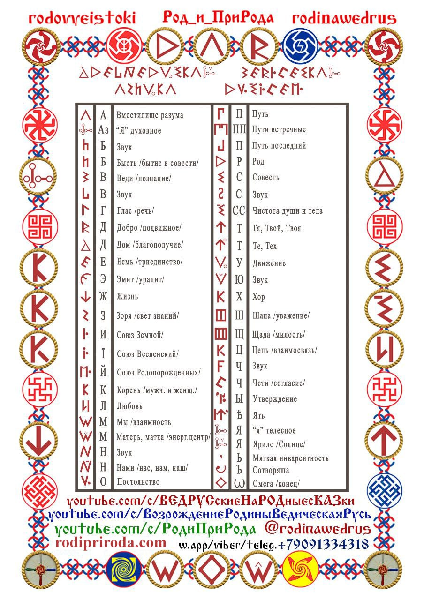

Древнюю Ведическую Мудрость необходимо познавать не только умом, её нужно принять в своё сердце и вникнуть в каждый Образ. Но только тогда, когда информация (набор характеристик, который не даёт полного знания) проходит через Сердце, Душу, Разум, Ум, Дух в жизненном опыте, и это становится Образом Жизни, тогда информация становится Ведическим Знанием.
-
Источник:
- Иванченко Александр Семёнович. - Гусев О.М. Роман-исследование «Путями Великого Россиянина», Санкт-Петербург. ООО «АНТТ-Принт», 2006г.- 334 стр.
-
Дополнил: Олег Геннадьевич Паньков